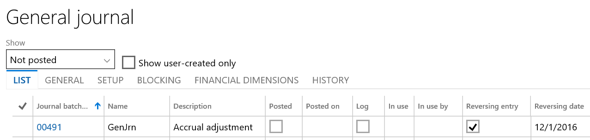

Allgemeine Erfassungsverarbeitung
Important
Dynamics 365 for Finance and Operations hat sich zu speziell entwickelten Anwendungen entwickelt, mit denen Sie bestimmte Geschäftsfunktionen verwalten können. Weitere Informationen zu diesen Änderungen finden Sie im Dynamics 365-Lizenzierungshandbuch.
Dieses Thema beschreibt die Funktionen, mit denen die allgemeine Erfassung einfacher wird und die auch helfen, sicherzustellen, dass die korrekten Daten erfasst und die internen Kontrollen nicht beeinträchtigt werden.
Journale
Einer der wichtigsten Bereiche einrichten ist Journale. Es empfiehlt sich, bestimmte Journale für jeden Zweck, wie Abgrenzungsregulierung Fehlerkorrektur Intercompany, und zu definieren. Sie können jedes Journal anpassen, mit deren Hilfe, Dateneingabe für jeden Zweck einfach und sicherstellen zu machen.
Auf der Seite Journale können Sie folgende Elemente einrichten:
- Workflowgenehmigung - Definieren Sie Journal-Workflows, die basierend auf Kriterien wie „Gesamt“ oder „Betrag“ Wesentlichkeitsgrenzen für Überprüfung- und Genehmigungsschritte festlegen, um die interne Kontrolle zu erhöhen. Sie richten Workflows für die allgemeinen Erfassungen auf der Seite Hauptbuchworkflows ein.
- Standardwerte – Wählen Sie Standardwerte für Gegenkonten, Währung und Finanzdimensionen aus.
- Erfassungssteuerung – Richten Sie Einschränkungen für den Unternehmens- und Kontotyp und die Segmentwerte ein.
Beispiele
Ein Journal kann nur für Regulierungen verwendet werden. In diesem Fall können Sie angeben, dass nur die Sachkonto-Kontenart für alle Unternehmen gültig ist.
{kind=link}
Ein Journal kann nur für ein bestimmtes Segment oder für einen Bereich für Hauptkonten verwendet werden.
{kind=link}
Die Option Automatische Rückbuchung ist nur in allgemeinen Erfassungen verfügbar. Beispiel: Sie haben eine Abgrenzungsregulierung, in der das eigentliche Dokument noch nicht verarbeitet wurde, wie in der folgenden Abbildung dargestellt. 
{kind=link}
Das Microsoft Excel-Add-in für Journaleinträge bietet eine weitere Ebene der Automatisierung und erleichtert die Dateneingabe. Die Positionen in Excel öffnen-Aktivität ist auf den Seiten Allgemeine Erfassung und Alle Journale verfügbar.
Auf der Seite Periodische Erfassungen können Sie wiederholende Erfassungen einrichten, um die Erfassungsverarbeitung zu automatisieren.
Belegvorlagen können jederzeit verwenden. Auf der Seite Allgemeine Erfassungen finden Sie die Aktivitäten Speichern und Belegvorlage auswählen auf der Seite Alle Journale unter Funktionen.
Verwandte Einstellung
Die folgende Einstellung ist für die allgemeine Erfassungen nicht spezifisch, sorgt aber dafür, dass die Dateneingabe richtig und einfach ist.
Hauptkonto
Die Hauptkontoeinstellung stellt viele Optionen zum Verarbeiten der allgemeinen Erfassung bereit:
SOLL/HABEN-Anforderung - Verwenden Sie diese Option, wenn ein Hauptkonto auf Soll- oder Habenbuchungen beschränkt ist. Die Einstellung wird überprüft, wenn eine Erfassung geprüft oder gebucht wird.
Standardgegenkonto
Unterbrochen – Aussetzen eines Hauptkontos für die Dateneingabe für alle Unternehmen oder für ein bestimmtes Unternehmen bzw. bestimmte juristische Personen.
Keine manuellen Eingaben zulassen – Verhindert, dass Benutzer in Erfassungen manuell einen Wert für dieses Konto eingeben
Standard-Währung/Währung prüfen
Juristische Person überschreibt - Diese Einstellung ist spezifisch für das definierte Unternehmen/die definierte juristische Person:
- Standard-MwSt/MwSt prüfen
- Standarddimension – Nicht fixiert oder Fester Wert Fester Wert unterstützt, dass sämtliche Buchungen für dieses Hauptkonto immer einen beliebigen Dimensionswert verwenden, der als Fest eingerichtet ist.
Buchungsprüfung
- Benutzervalidierung - Diese Option regelt, welche Benutzer auf ein Hauptkonto buchen dürfen.
- Überprüfung des Buchungstyps – Diese Option regelt, welche Buchungsarten für ein Hauptkonto zulässig sind.
Buchhaltungsstrukturen und Strukturen für erweiterte Regeln
Buchhaltungsstrukturen und Strukturen für die erweiterten Regeln sind sehr wichtig, um sicherzustellen, dass die Daten, die für die Finanzberichterstellung und die Leistungsnachverfolgung erforderlich sind, während der allgemeinen Erfassungsverarbeitung und in allen Dokumentationen erfasst werden. Mit Buchhaltungsstrukturen und Strukturen für erweiterten Regeln können Sie die Dateneingabeerfahrung anpassen. Sie können die Dateneingabe nur für Finanzdimensionen zulassen, die in jeder Situation relevant sind. Sie können auch die Anforderung erzwingen, dass die erforderlichen und korrekte Daten immer erfasst werden.
Weitere Informationen finden Sie in folgenden Themen:
- Kontenplan planen
- Erweiterte Regeln für Erfassungen erstellen
- Erstellen von Journaleinträgen mithilfe einer Vorlage
- Erfassungen erstellen und validieren
- Buchen periodischer Erfassungen
- Sachkonto-Zuordnungserfassung verarbeiten
Buchung simulieren
Sie können Buchung simulieren im Menü Überprüfen für die meisten Erfassungen finden. Wenn Sie eine Erfassung mit der Funktion Überprüfen prüft das System die Erfassung für bestimmte Fehlerbedingungen. Wenn Sie die Funktion Buchung simulieren verwenden, führt das System alle gleichen Prozessen aus, die während des Buchens durchgeführt werden, ohne die Erfassung zu buchen. Sie können die Verbuchungsmeldungen, die angezeigt werden, überprüfen, die Fehler beheben, die Sie finden und dann das Menü Buchen öffnen, um die Erfassung zu buchen.
Buchen simulieren ist nicht verfügbar für Stapelverarbeitung. Allerdings ist ein Code vorhanden, um die Buchung in Chargen zu simulieren und Entwickler können den Code erweitern, um diese Funktionen ergänzen.
Erfassungsentsperrung
Eine Schaltfläche ist auf der Erfassungsseite verfügbar, um eine fehlerhafte Erfassung aufzuheben, bei der der Status „vom System gesperrt“ auf „Ja“ festgelegt ist. Diese Entsperrung kann von einem Administrator des Systems durchgeführt werden, der sämtliche ausführenden Stapelverarbeitungsaufträge analysiert und bestätigt hat, dass diese Erfassung nicht mehr aktiv über einen Stapelverarbeitungsauftrag verarbeitet wird. Diese Schaltfläche wird von der Funktion Erfassungsentsperrungsschaltfläche auf der Seite Funktionsverwaltung aktiviert.
Workflow-Rückruf
Die Möglichkeit, eine Erfassung in einem Workflow mit dem Status „Nicht Wiederherstellbar“ erneut aufzurufen, wird aktiviert, indem die Schaltfläche Workflow auf einer Erfassung und auf der Seite Workflowhistorie verwendet wird. Dies wird von der Funktion Zurücksetzen des Workflowstatus für Erfassungen auf der Seite Funktionsverwaltung aktiviert.
Erfassungspositionen löschen
Die Möglichkeit, schnell alle Erfassungspositionen zu löschen, wird in einer Erfassung unter Funktionen > Erfassungspositionen löschen aktiviert. Um diese Funktion zu aktivieren, wählen Sie in der Funktionsverwaltung die Option Erfassungsleistungsoptimierungen löschen aus.